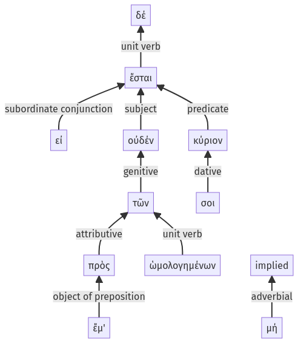

Lysias, Oration 1, 1.21.9-1.21.19a
1.20.58-1.21.8a | 1.21.20-1.21.27a
Sentence 54
1.21.9-1.21.19a
εἰ δέ μή, οὐδέν σοι κύριον ἔσται τῶν πρὸς ἔμ' ὡμολογημένων.
2 εἰ μή
1 οὐδέν σοι κύριον ἔσται
2 τῶν πρὸς ἔμ' ὡμολογημένων
εἰ δέ μή, οὐδέν σοι κύριον ἔσται τῶν πρὸς ἔμ' ὡμολογημένων.
Highlighting:
- connecting words
- unit verb
- subject
- object
Color code:
- independent clause (level 1, linking verb)
- subordinate clause (level 2, transitive verb)
- attributive participle (level 2, transitive verb)
